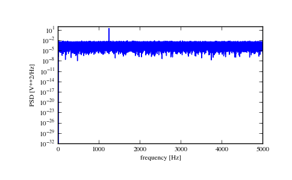
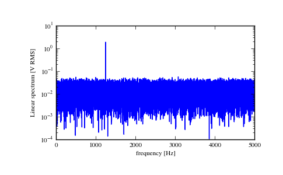

scipy.signal.periodogram¶
- scipy.signal.periodogram(x, fs=1.0, window=None, nfft=None, detrend='constant', return_onesided=True, scaling='density', axis=-1)[source]¶
Estimate power spectral density using a periodogram.
Parameters : x : array_like
Time series of measurement values
fs : float, optional
Sampling frequency of the x time series in units of Hz. Defaults to 1.0.
window : str or tuple or array_like, optional
Desired window to use. See get_window for a list of windows and required parameters. If window is an array it will be used directly as the window. Defaults to None; equivalent to ‘boxcar’.
nfft : int, optional
Length of the FFT used. If None the length of x will be used.
detrend : str or function, optional
return_onesided : bool, optional
If True, return a one-sided spectrum for real data. If False return a two-sided spectrum. Note that for complex data, a two-sided spectrum is always returned.
scaling : { ‘density’, ‘spectrum’ }, optional
Selects between computing the power spectral density (‘density’) where Pxx has units of V**2/Hz if x is measured in V and computing the power spectrum (‘spectrum’) where Pxx has units of V**2 if x is measured in V. Defaults to ‘density’
axis : int, optional
Axis along which the periodogram is computed; the default is over the last axis (i.e. axis=-1).
Returns : f : ndarray
Array of sample frequencies.
Pxx : ndarray
Power spectral density or power spectrum of x.
See also
- welch
- Estimate power spectral density using Welch’s method
- lombscargle
- Lomb-Scargle periodogram for unevenly sampled data
Notes
New in version 0.12.0.
Examples
>>> from scipy import signal >>> import matplotlib.pyplot as plt
Generate a test signal, a 2 Vrms sine wave at 1234 Hz, corrupted by 0.001 V**2/Hz of white noise sampled at 10 kHz.
>>> fs = 10e3 >>> N = 1e5 >>> amp = 2*np.sqrt(2) >>> freq = 1234.0 >>> noise_power = 0.001 * fs / 2 >>> time = np.arange(N) / fs >>> x = amp*np.sin(2*np.pi*freq*time) >>> x += np.random.normal(scale=np.sqrt(noise_power), size=time.shape)
Compute and plot the power spectral density.
>>> f, Pxx_den = signal.periodogram(x, fs) >>> plt.semilogy(f, Pxx_den) >>> plt.xlabel('frequency [Hz]') >>> plt.ylabel('PSD [V**2/Hz]') >>> plt.show()
If we average the last half of the spectral density, to exclude the peak, we can recover the noise power on the signal.
>>> np.mean(Pxx_den[256:]) 0.0009924865443739191
Now compute and plot the power spectrum.
>>> f, Pxx_spec = signal.periodogram(x, fs, 'flattop', scaling='spectrum') >>> plt.figure() >>> plt.semilogy(f, np.sqrt(Pxx_spec)) >>> plt.xlabel('frequency [Hz]') >>> plt.ylabel('Linear spectrum [V RMS]') >>> plt.show()
The peak height in the power spectrum is an estimate of the RMS amplitude.
>>> np.sqrt(Pxx_spec.max()) 2.0077340678640727